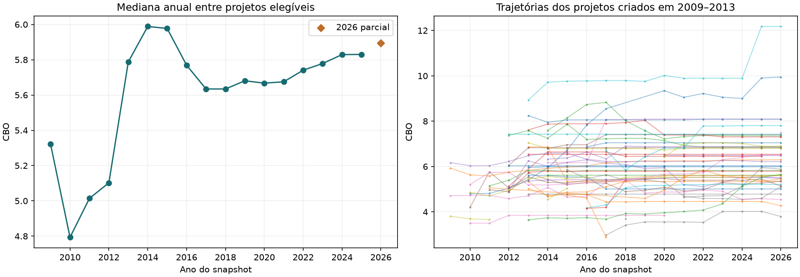
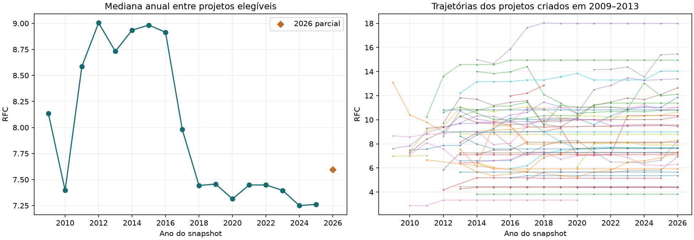
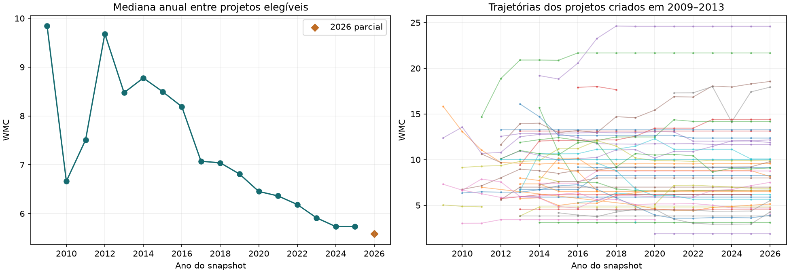
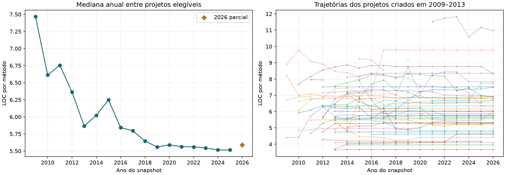
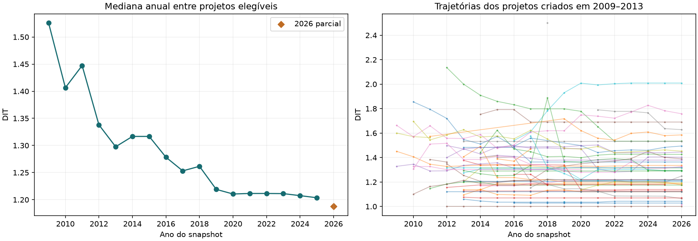
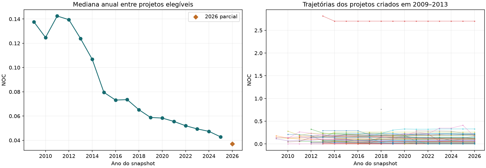
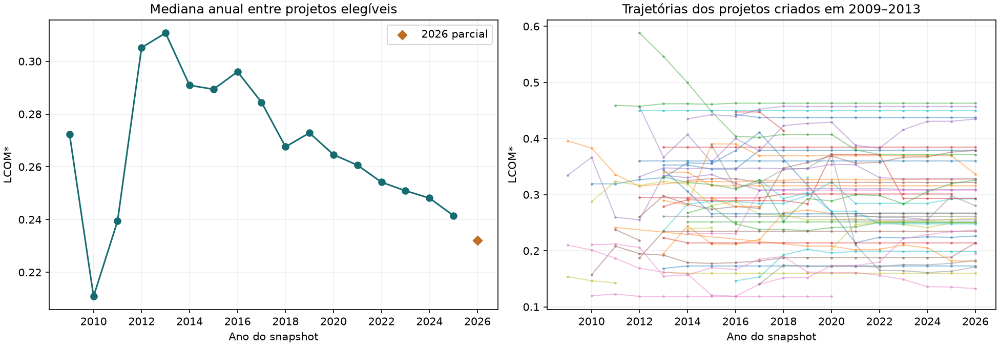

Evolução histórica de projetos Spring
Versões anuais, transição para Spring Boot e evidências observáveis de IA.
Este relatório é descritivo. A criação define o sorteio; o ano do snapshot define a época da medição. Mudanças observadas não demonstram causalidade. Ausência de evidência de IA não comprova ausência de uso.
População antes da clonagem
| Coorte de criação | População | Excluídos | Candidatos | Arquivados mantidos | Atividade antiga mantida | Data desconhecida mantida |
|---|
| E1 | 141 | 25 | 116 | 14 | 54 | 0 |
| E2 | 8426 | 2590 | 5836 | 369 | 5100 | 0 |
| E3 | 35774 | 9955 | 25819 | 985 | 21989 | 0 |
| E4 | 73279 | 20418 | 52861 | 670 | 13766 | 3 |
| Fora das coortes | 1 | 0 | 1 | 0 | 0 | 0 |
| Total | 117621 | 32988 | 84633 | 2038 | 40909 | 3 |
Candidatos passaram pelos filtros de metadados. Apenas datas de criação válidas dentro das quatro coortes e até o corte participam do sorteio.
1. Cobertura da coleta
| Coorte de criação | Sorteados | Processados | Projetos com versões | Snapshots | Projetos elegíveis | Snapshots elegíveis |
|---|
| E1 | 116 | 116 | 116 | 1728 | 52 | 609 |
| E2 | 500 | 500 | 497 | 5103 | 105 | 1001 |
| E3 | 500 | 500 | 500 | 3707 | 86 | 604 |
| E4 | 500 | 500 | 499 | 1374 | 145 | 319 |
| Total | 1616 | 1616 | 1612 | 11912 | 388 | 2533 |
Épocas com medições elegíveis em anos completos: 4 de 4. O período parcial de 2026 é informado separadamente. Observações anuais com SHA repetido continuam identificadas nas tabelas.
Uma versão só participa da comparação principal com Spring confirmado em declarações de produção, pelo menos 2.000 linhas Java e extração CK completa. Versões menores, código do próprio framework e falhas permanecem nas tabelas de diagnóstico. O total de projetos não é a soma das épocas de medição: o mesmo projeto pode atravessar várias épocas.
Na tabela de cobertura, “Snapshots” inclui extrações concluídas e árvores sem Java; as falhas aparecem nos estados a seguir e continuam no CSV. Estados registrados: falha de extração: 30, sem histórico até o corte: 17087, sem fontes Java: 62, extração CK concluída: 11850, falha de recuperação: 54, datas inconsistentes: 5.
Esta execução incorpora a resolução complementar de catálogos Gradle. A amostra, os SHA, as evidências de IA e os valores CK foram preservados. Correções de framework e elegibilidade · Conferência das invariantes.
2. O que medimos
CBO: dependências gerais entre classes. RFC: chamadas distintas contabilizadas pelo CK. WMC: complexidade dos métodos por classe, sem medir tempo de execução. LOC por método: tamanho dos métodos. DIT e NOC: profundidade e descendentes na herança. LCOM*: falta de coesão na variante normalizada do CK. Nenhuma dessas medidas isoladamente constitui uma nota de maturidade.
Foco principal: projetos criados entre 2009 e 2013
Dos 116 candidatos antigos, 52 têm ao menos uma versão elegível, somando 609 observações anuais. Há 16 pares antes/depois de Boot em anos completos e 1 pares de IA. Outros 10 pares de IA têm acompanhamento parcial em 2026. Estas contagens representam perguntas diferentes; não são grupos independentes para somar.
As tabelas deste bloco acompanham somente os projetos antigos sorteados. A época nas linhas é a data do código medido. As demais coortes e as tabelas gerais continuam abaixo como contexto. O total de projetos pode variar porque nem toda versão satisfaz tamanho, framework e cobertura; as épocas podem reunir conjuntos diferentes de projetos.
Épocas do código nos anos completos: E1 = 2009–2013; E2 = 2014–2017; E3 = 2018–2021; E4 = 2022–2025. O corte de 2026 é parcial e aparece em linha própria.
| Época do código | Evidência de IA | Projetos | Snapshots | CBO | RFC | WMC | LOC por método | DIT | NOC | LCOM* |
|---|
| E1 | Todos | 33 | 71 | 5,469 | 8,641 | 7,579 | 6,023 | 1,317 | 0,136 | 0,290 |
| E1 | Com evidência | 0 | 0 | — | — | — | — | — | — | — |
| E1 | Sem evidência detectada | 33 | 71 | 5,469 | 8,641 | 7,579 | 6,023 | 1,317 | 0,136 | 0,290 |
| E1 | Evidência mudou na época | 0 | 0 | — | — | — | — | — | — | — |
| E2 | Todos | 43 | 155 | 5,825 | 8,788 | 8,804 | 6,023 | 1,315 | 0,086 | 0,289 |
| E2 | Com evidência | 0 | 0 | — | — | — | — | — | — | — |
| E2 | Sem evidência detectada | 43 | 155 | 5,825 | 8,788 | 8,804 | 6,023 | 1,315 | 0,086 | 0,289 |
| E2 | Evidência mudou na época | 0 | 0 | — | — | — | — | — | — | — |
| E3 | Todos | 47 | 168 | 5,925 | 8,050 | 7,994 | 6,030 | 1,291 | 0,107 | 0,292 |
| E3 | Com evidência | 0 | 0 | — | — | — | — | — | — | — |
| E3 | Sem evidência detectada | 47 | 168 | 5,925 | 8,050 | 7,994 | 6,030 | 1,291 | 0,107 | 0,292 |
| E3 | Evidência mudou na época | 0 | 0 | — | — | — | — | — | — | — |
| E4 | Todos | 43 | 172 | 6,030 | 8,135 | 8,273 | 5,878 | 1,302 | 0,105 | 0,267 |
| E4 | Com evidência | 0 | 0 | — | — | — | — | — | — | — |
| E4 | Sem evidência detectada | 42 | 168 | 6,009 | 8,108 | 8,133 | 5,831 | 1,302 | 0,105 | 0,267 |
| E4 | Evidência mudou na época | 1 | 4 | 9,895 | 13,302 | 11,140 | 6,684 | 1,302 | 0,233 | 0,284 |
| 2026 parcial | Todos | 43 | 43 | 6,030 | 8,294 | 8,157 | 6,011 | 1,292 | 0,106 | 0,267 |
| 2026 parcial | Com evidência | 11 | 11 | 5,654 | 10,654 | 7,517 | 6,729 | 1,336 | 0,162 | 0,237 |
| 2026 parcial | Sem evidência detectada | 32 | 32 | 6,351 | 8,018 | 8,215 | 5,700 | 1,216 | 0,076 | 0,301 |
| 2026 parcial | Evidência mudou na época | 0 | 0 | — | — | — | — | — | — | — |
Mudanças antes/depois nos mesmos projetos antigos
n_a e n_b contam pares completos: o mesmo projeto aparece antes e depois. A diferença é calculada em cada par e depois resumida pela mediana. O bloco “2026 parcial” usa acompanhamento parcial e permanece separado dos anos completos. Sem pares, a tabela mostra zero projetos e traços nas métricas, nunca uma mudança igual a zero.
| Período | Marco | Métrica | n_a | n_b | Mediana antes | Mediana depois | Mediana das diferenças |
|---|
| Anos completos | Spring Boot | CBO | 16 | 16 | 5,437 | 5,516 | 0,069 |
| Anos completos | Spring Boot | RFC | 16 | 16 | 9,553 | 9,819 | -0,033 |
| Anos completos | Spring Boot | WMC | 16 | 16 | 10,027 | 10,121 | -0,276 |
| Anos completos | Spring Boot | LOC por método | 16 | 16 | 6,079 | 6,166 | -0,190 |
| Anos completos | Spring Boot | DIT | 16 | 16 | 1,356 | 1,297 | -0,002 |
| Anos completos | Spring Boot | NOC | 16 | 16 | 0,076 | 0,069 | -0,000 |
| Anos completos | Spring Boot | LCOM* | 16 | 16 | 0,290 | 0,301 | 0,000 |
| Anos completos | Evidências de IA | CBO | 1 | 1 | 9,895 | 12,180 | 2,284 |
| Anos completos | Evidências de IA | RFC | 1 | 1 | 13,302 | 14,034 | 0,731 |
| Anos completos | Evidências de IA | WMC | 1 | 1 | 11,140 | 10,079 | -1,061 |
| Anos completos | Evidências de IA | LOC por método | 1 | 1 | 6,684 | 7,719 | 1,035 |
| Anos completos | Evidências de IA | DIT | 1 | 1 | 1,302 | 1,292 | -0,010 |
| Anos completos | Evidências de IA | NOC | 1 | 1 | 0,233 | 0,225 | -0,008 |
| Anos completos | Evidências de IA | LCOM* | 1 | 1 | 0,284 | 0,292 | 0,008 |
| 2026 parcial | Spring Boot | CBO | 0 | 0 | — | — | — |
| 2026 parcial | Spring Boot | RFC | 0 | 0 | — | — | — |
| 2026 parcial | Spring Boot | WMC | 0 | 0 | — | — | — |
| 2026 parcial | Spring Boot | LOC por método | 0 | 0 | — | — | — |
| 2026 parcial | Spring Boot | DIT | 0 | 0 | — | — | — |
| 2026 parcial | Spring Boot | NOC | 0 | 0 | — | — | — |
| 2026 parcial | Spring Boot | LCOM* | 0 | 0 | — | — | — |
| 2026 parcial | Evidências de IA | CBO | 10 | 10 | 5,542 | 5,634 | 0,027 |
| 2026 parcial | Evidências de IA | RFC | 10 | 10 | 9,977 | 10,119 | 0,281 |
| 2026 parcial | Evidências de IA | WMC | 10 | 10 | 6,082 | 6,515 | 0,201 |
| 2026 parcial | Evidências de IA | LOC por método | 10 | 10 | 6,619 | 6,710 | 0,025 |
| 2026 parcial | Evidências de IA | DIT | 10 | 10 | 1,399 | 1,394 | -0,000 |
| 2026 parcial | Evidências de IA | NOC | 10 | 10 | 0,119 | 0,135 | -0,001 |
| 2026 parcial | Evidências de IA | LCOM* | 10 | 10 | 0,229 | 0,232 | 0,002 |
Quais versões formam cada comparação?
O primeiro ano observado é o primeiro snapshot anual com o sinal. As versões comparadas precisam satisfazer os critérios de qualidade da extração e tamanho; por isso podem estar afastadas desse marco. Intervalos maiores também abrangem mais mudanças concorrentes. Estes anos não identificam a data exata da adoção.
| Projeto | Período | Marco | Primeiro ano observado | Versão antes | Versão depois | Intervalo em anos |
|---|
| Netflix/genie | Anos completos | Spring Boot | 2015 | 2014 | 2015 | 1 |
| europeana/api2 | Anos completos | Spring Boot | 2018 | 2017 | 2018 | 1 |
| europeana/corelib | Anos completos | Spring Boot | 2015 | 2014 | 2015 | 1 |
| GreenButtonAlliance/OpenESPI-DataCustodian-java | Anos completos | Spring Boot | 2025 | 2024 | 2025 | 1 |
| GreenButtonAlliance/OpenESPI-DataCustodian-java | Anos completos | Evidências de IA | 2025 | 2024 | 2025 | 1 |
| ralscha/spring4ws-demos | Anos completos | Spring Boot | 2015 | 2014 | 2015 | 1 |
| dschadow/JavaSecurity | Anos completos | Spring Boot | 2016 | 2015 | 2016 | 1 |
| apereo/cas | Anos completos | Spring Boot | 2016 | 2015 | 2016 | 1 |
| sivaprasadreddy/sivalabs-blog-samples-code | Anos completos | Spring Boot | 2014 | 2012 | 2014 | 2 |
| BroadleafCommerce/BroadleafCommerce | Anos completos | Spring Boot | 2017 | 2016 | 2017 | 1 |
| stormpath/stormpath-sdk-java | Anos completos | Spring Boot | 2015 | 2014 | 2015 | 1 |
| springfox/springfox | Anos completos | Spring Boot | 2014 | 2013 | 2014 | 1 |
| surajcm/Poseidon | Anos completos | Spring Boot | 2018 | 2017 | 2018 | 1 |
| Activiti/Activiti | Anos completos | Spring Boot | 2014 | 2013 | 2014 | 1 |
| apache/causeway | Anos completos | Spring Boot | 2019 | 2011 | 2019 | 8 |
| hawtio/hawtio | Anos completos | Spring Boot | 2014 | 2013 | 2014 | 1 |
| Spring-Framework-Java-Apps/greenshop | Anos completos | Spring Boot | 2022 | 2021 | 2022 | 1 |
| jeecgboot/MiniDao | 2026 parcial | Evidências de IA | 2026 | 2025 | 2026 | 1 |
| dschadow/JavaSecurity | 2026 parcial | Evidências de IA | 2026 | 2025 | 2026 | 1 |
| apereo/cas | 2026 parcial | Evidências de IA | 2026 | 2025 | 2026 | 1 |
| uPortal-Project/uPortal | 2026 parcial | Evidências de IA | 2026 | 2025 | 2026 | 1 |
| citrusframework/citrus | 2026 parcial | Evidências de IA | 2026 | 2025 | 2026 | 1 |
| Activiti/Activiti | 2026 parcial | Evidências de IA | 2026 | 2025 | 2026 | 1 |
| apache/causeway | 2026 parcial | Evidências de IA | 2026 | 2025 | 2026 | 1 |
| hawtio/hawtio | 2026 parcial | Evidências de IA | 2026 | 2025 | 2026 | 1 |
| mybatis/spring | 2026 parcial | Evidências de IA | 2026 | 2025 | 2026 | 1 |
| bugsnag/bugsnag-java | 2026 parcial | Evidências de IA | 2026 | 2025 | 2026 | 1 |
Boot e evidência de IA aparecem no mesmo ano em GreenButtonAlliance/OpenESPI-DataCustodian-java. A comparação não separa a contribuição de cada mudança.
Estabilidade e cobertura anual da coorte antiga
“Mesma versão” conta observações elegíveis sem novo SHA em relação ao corte anterior. A estabilidade pode decorrer de inatividade. Evidência de IA descreve vestígios disponíveis até a versão, sem provar uso contínuo nem efeito sobre as métricas.
| Ano | Projetos elegíveis | Mesma versão | Com evidência | Sem evidência detectada |
|---|
| 2009 | 4 | 0 | 0 | 4 |
| 2010 | 9 | 0 | 0 | 9 |
| 2011 | 12 | 0 | 0 | 12 |
| 2012 | 18 | 0 | 0 | 18 |
| 2013 | 28 | 2 | 0 | 28 |
| 2014 | 36 | 7 | 0 | 36 |
| 2015 | 37 | 8 | 0 | 37 |
| 2016 | 40 | 13 | 0 | 40 |
| 2017 | 42 | 10 | 0 | 42 |
| 2018 | 41 | 14 | 0 | 41 |
| 2019 | 41 | 14 | 0 | 41 |
| 2020 | 43 | 14 | 0 | 43 |
| 2021 | 43 | 17 | 0 | 43 |
| 2022 | 43 | 18 | 0 | 43 |
| 2023 | 43 | 23 | 0 | 43 |
| 2024 | 43 | 22 | 0 | 43 |
| 2025 | 43 | 20 | 1 | 42 |
| 2026 | 43 | 23 | 11 | 32 |
Síntese da coorte antiga, incluindo produção e testes separados · Pares por escopo · Janelas de comparação · Cobertura anual
3. Comparações por época de medição
Cada valor é a mediana entre projetos, depois de obter a mediana dos snapshots de cada projeto na época. Assim, projetos com mais versões não recebem mais peso. Projetos cuja evidência muda dentro da época aparecem em “Evidência mudou na época”, sem serem contados simultaneamente nos dois grupos. 2026 é parcial e fica separado.
Os grupos consideram evidências já observadas no histórico até cada corte. Um projeto pode conservar esse rótulo após remover um arquivo de configuração. A tabela de medições separa sinais presentes na versão (ia_present) e evidências históricas (ia_history); nenhum deles prova uso contínuo.
| Época do código | Evidência de IA | Projetos | Snapshots | CBO | RFC | WMC | LOC por método | DIT | NOC | LCOM* |
|---|
| E1 | Todos | 33 | 71 | 5,469 | 8,641 | 7,579 | 6,023 | 1,317 | 0,136 | 0,290 |
| E1 | Com evidência | 0 | 0 | — | — | — | — | — | — | — |
| E1 | Sem evidência detectada | 33 | 71 | 5,469 | 8,641 | 7,579 | 6,023 | 1,317 | 0,136 | 0,290 |
| E1 | Evidência mudou na época | 0 | 0 | — | — | — | — | — | — | — |
| E2 | Todos | 124 | 267 | 5,627 | 7,844 | 7,332 | 5,797 | 1,262 | 0,076 | 0,284 |
| E2 | Com evidência | 0 | 0 | — | — | — | — | — | — | — |
| E2 | Sem evidência detectada | 124 | 267 | 5,627 | 7,844 | 7,332 | 5,797 | 1,262 | 0,076 | 0,284 |
| E2 | Evidência mudou na época | 0 | 0 | — | — | — | — | — | — | — |
| E3 | Todos | 229 | 742 | 5,675 | 7,425 | 6,310 | 5,590 | 1,216 | 0,052 | 0,261 |
| E3 | Com evidência | 0 | 0 | — | — | — | — | — | — | — |
| E3 | Sem evidência detectada | 229 | 742 | 5,675 | 7,425 | 6,310 | 5,590 | 1,216 | 0,052 | 0,261 |
| E3 | Evidência mudou na época | 0 | 0 | — | — | — | — | — | — | — |
| E4 | Todos | 315 | 1083 | 5,833 | 7,222 | 5,713 | 5,498 | 1,205 | 0,045 | 0,242 |
| E4 | Com evidência | 1 | 1 | 6,476 | 8,254 | 2,505 | 6,214 | 1,094 | 0,018 | 0,128 |
| E4 | Sem evidência detectada | 310 | 1068 | 5,835 | 7,170 | 5,705 | 5,484 | 1,207 | 0,045 | 0,243 |
| E4 | Evidência mudou na época | 4 | 14 | 4,762 | 9,003 | 7,914 | 5,830 | 1,220 | 0,106 | 0,224 |
| 2026 parcial | Todos | 370 | 370 | 5,894 | 7,596 | 5,583 | 5,591 | 1,188 | 0,037 | 0,232 |
| 2026 parcial | Com evidência | 40 | 40 | 5,908 | 9,524 | 5,645 | 6,747 | 1,258 | 0,076 | 0,226 |
| 2026 parcial | Sem evidência detectada | 330 | 330 | 5,884 | 7,296 | 5,561 | 5,447 | 1,184 | 0,033 | 0,234 |
| 2026 parcial | Evidência mudou na época | 0 | 0 | — | — | — | — | — | — | — |
4. Antes e depois no mesmo projeto
A comparação usa a última versão anual elegível anterior ao marco e a primeira elegível posterior, entre anos completos. n_a é a quantidade de projetos antes e n_b a quantidade depois: aqui são os mesmos projetos. A diferença apresentada é a mediana das diferenças individuais, que pode diferir da subtração das duas medianas. Um projeto já positivo na primeira observação não demonstra uma transição.
| Marco | Métrica | n_a / antes | n_b / depois | Mediana antes | Mediana depois | Mediana das diferenças |
|---|
| Spring Boot | CBO | 21 | 21 | 5,425 | 5,469 | 0,115 |
| Spring Boot | RFC | 21 | 21 | 9,257 | 9,491 | -0,167 |
| Spring Boot | WMC | 21 | 21 | 9,806 | 10,079 | -0,341 |
| Spring Boot | LOC por método | 21 | 21 | 6,248 | 6,037 | -0,090 |
| Spring Boot | DIT | 21 | 21 | 1,314 | 1,292 | -0,004 |
| Spring Boot | NOC | 21 | 21 | 0,070 | 0,071 | 0,000 |
| Spring Boot | LCOM* | 21 | 21 | 0,295 | 0,308 | -0,001 |
| Evidências de IA | CBO | 4 | 4 | 4,498 | 5,568 | 1,209 |
| Evidências de IA | RFC | 4 | 4 | 7,606 | 11,259 | 3,037 |
| Evidências de IA | WMC | 4 | 4 | 6,992 | 8,885 | 0,886 |
| Evidências de IA | LOC por método | 4 | 4 | 5,287 | 6,460 | 1,173 |
| Evidências de IA | DIT | 4 | 4 | 1,192 | 1,243 | 0,100 |
| Evidências de IA | NOC | 4 | 4 | 0,102 | 0,143 | 0,009 |
| Evidências de IA | LCOM* | 4 | 4 | 0,220 | 0,238 | 0,001 |
Contexto nos mesmos intervalos de calendário: projetos sem presença observada do marco em seu histórico disponível. Cada janela é descrita separadamente; os projetos não são apresentados como controles equivalentes.
| Marco | Ano anterior | Ano posterior | Métrica | Projetos | Mediana das diferenças |
|---|
| Spring Boot | 2011 | 2019 | CBO | 6 | 0,502 |
| Spring Boot | 2011 | 2019 | DIT | 6 | -0,020 |
| Spring Boot | 2011 | 2019 | LCOM* | 6 | -0,015 |
| Spring Boot | 2011 | 2019 | LOC por método | 6 | -0,071 |
| Spring Boot | 2011 | 2019 | NOC | 6 | -0,006 |
| Spring Boot | 2011 | 2019 | RFC | 6 | 0,912 |
| Spring Boot | 2011 | 2019 | WMC | 6 | 0,084 |
| Spring Boot | 2012 | 2014 | CBO | 11 | 0,166 |
| Spring Boot | 2012 | 2014 | DIT | 11 | 0,000 |
| Spring Boot | 2012 | 2014 | LCOM* | 11 | 0,000 |
| Spring Boot | 2012 | 2014 | LOC por método | 11 | 0,046 |
| Spring Boot | 2012 | 2014 | NOC | 11 | 0,000 |
| Spring Boot | 2012 | 2014 | RFC | 11 | 0,026 |
| Spring Boot | 2012 | 2014 | WMC | 11 | 0,000 |
| Spring Boot | 2013 | 2014 | CBO | 17 | 0,000 |
| Spring Boot | 2013 | 2014 | DIT | 17 | 0,000 |
| Spring Boot | 2013 | 2014 | LCOM* | 17 | 0,000 |
| Spring Boot | 2013 | 2014 | LOC por método | 17 | 0,000 |
| Spring Boot | 2013 | 2014 | NOC | 17 | 0,000 |
| Spring Boot | 2013 | 2014 | RFC | 17 | 0,000 |
| Spring Boot | 2013 | 2014 | WMC | 17 | 0,000 |
| Spring Boot | 2014 | 2015 | CBO | 20 | 0,000 |
| Spring Boot | 2014 | 2015 | DIT | 20 | 0,000 |
| Spring Boot | 2014 | 2015 | LCOM* | 20 | 0,000 |
| Spring Boot | 2014 | 2015 | LOC por método | 20 | 0,000 |
| Spring Boot | 2014 | 2015 | NOC | 20 | 0,000 |
| Spring Boot | 2014 | 2015 | RFC | 20 | 0,000 |
| Spring Boot | 2014 | 2015 | WMC | 20 | 0,000 |
| Spring Boot | 2015 | 2016 | CBO | 20 | 0,000 |
| Spring Boot | 2015 | 2016 | DIT | 20 | 0,000 |
| Spring Boot | 2015 | 2016 | LCOM* | 20 | 0,000 |
| Spring Boot | 2015 | 2016 | LOC por método | 20 | 0,000 |
| Spring Boot | 2015 | 2016 | NOC | 20 | 0,000 |
| Spring Boot | 2015 | 2016 | RFC | 20 | 0,000 |
| Spring Boot | 2015 | 2016 | WMC | 20 | 0,000 |
| Spring Boot | 2016 | 2017 | CBO | 27 | 0,000 |
| Spring Boot | 2016 | 2017 | DIT | 27 | 0,000 |
| Spring Boot | 2016 | 2017 | LCOM* | 27 | 0,000 |
| Spring Boot | 2016 | 2017 | LOC por método | 27 | 0,000 |
| Spring Boot | 2016 | 2017 | NOC | 27 | 0,000 |
| Spring Boot | 2016 | 2017 | RFC | 27 | 0,000 |
| Spring Boot | 2016 | 2017 | WMC | 27 | 0,000 |
| Spring Boot | 2017 | 2018 | CBO | 42 | 0,000 |
| Spring Boot | 2017 | 2018 | DIT | 42 | 0,000 |
| Spring Boot | 2017 | 2018 | LCOM* | 42 | 0,000 |
| Spring Boot | 2017 | 2018 | LOC por método | 42 | 0,000 |
| Spring Boot | 2017 | 2018 | NOC | 42 | 0,000 |
| Spring Boot | 2017 | 2018 | RFC | 42 | 0,000 |
| Spring Boot | 2017 | 2018 | WMC | 42 | 0,000 |
| Spring Boot | 2018 | 2019 | CBO | 46 | 0,000 |
| Spring Boot | 2018 | 2019 | DIT | 46 | 0,000 |
| Spring Boot | 2018 | 2019 | LCOM* | 46 | 0,000 |
| Spring Boot | 2018 | 2019 | LOC por método | 46 | 0,000 |
| Spring Boot | 2018 | 2019 | NOC | 46 | 0,000 |
| Spring Boot | 2018 | 2019 | RFC | 46 | 0,000 |
| Spring Boot | 2018 | 2019 | WMC | 46 | 0,000 |
| Spring Boot | 2019 | 2020 | CBO | 50 | 0,000 |
| Spring Boot | 2019 | 2020 | DIT | 50 | 0,000 |
| Spring Boot | 2019 | 2020 | LCOM* | 50 | 0,000 |
| Spring Boot | 2019 | 2020 | LOC por método | 50 | 0,000 |
| Spring Boot | 2019 | 2020 | NOC | 50 | 0,000 |
| Spring Boot | 2019 | 2020 | RFC | 50 | 0,000 |
| Spring Boot | 2019 | 2020 | WMC | 50 | 0,000 |
| Spring Boot | 2021 | 2022 | CBO | 51 | 0,000 |
| Spring Boot | 2021 | 2022 | DIT | 51 | 0,000 |
| Spring Boot | 2021 | 2022 | LCOM* | 51 | 0,000 |
| Spring Boot | 2021 | 2022 | LOC por método | 51 | 0,000 |
| Spring Boot | 2021 | 2022 | NOC | 51 | 0,000 |
| Spring Boot | 2021 | 2022 | RFC | 51 | 0,000 |
| Spring Boot | 2021 | 2022 | WMC | 51 | 0,000 |
| Spring Boot | 2024 | 2025 | CBO | 51 | 0,000 |
| Spring Boot | 2024 | 2025 | DIT | 51 | 0,000 |
| Spring Boot | 2024 | 2025 | LCOM* | 51 | 0,000 |
| Spring Boot | 2024 | 2025 | LOC por método | 51 | 0,000 |
| Spring Boot | 2024 | 2025 | NOC | 51 | 0,000 |
| Spring Boot | 2024 | 2025 | RFC | 51 | 0,000 |
| Spring Boot | 2024 | 2025 | WMC | 51 | 0,000 |
| Evidências de IA | 2024 | 2025 | CBO | 254 | 0,000 |
| Evidências de IA | 2024 | 2025 | DIT | 254 | 0,000 |
| Evidências de IA | 2024 | 2025 | LCOM* | 254 | 0,000 |
| Evidências de IA | 2024 | 2025 | LOC por método | 254 | 0,000 |
| Evidências de IA | 2024 | 2025 | NOC | 254 | 0,000 |
| Evidências de IA | 2024 | 2025 | RFC | 254 | 0,000 |
| Evidências de IA | 2024 | 2025 | WMC | 254 | 0,000 |
5. Trajetórias e contexto
As medianas anuais também mudam quando muda a composição dos projetos com dados. As trajetórias individuais e as tabelas por tamanho, framework e coorte ajudam a distinguir essa mudança de composição da evolução do mesmo projeto. Uma queda de uma métrica não significa automaticamente melhoria.







6. Dados e reprodução
Limitações: descoberta por metadados atuais; projetos desaparecidos; migrações ou reescrita de histórico; datas Git que não comprovam publicação real; falhas de parser; dependências sem resolução completa; IA sem vestígios e sinais ambíguos. Evidências de arquivos refletem configuração declarada, sem quantificar código gerado.
Gerado em 2026-10-11T22:16:35.570480+00:00Observação complementar: transições com acompanhamento parcial em 2026
Estes pares não entram na tabela de anos completos. Eles usam a última versão anual elegível anterior ao marco e a primeira versão elegível posterior, quando esta só está disponível no corte parcial de 2026. O tempo de acompanhamento é menor e a comparação não identifica um efeito causal.
| Marco | Métrica | n_a / antes | n_b / parcial | Mediana antes | Mediana parcial | Mediana das diferenças |
|---|
| Spring Boot | CBO | 0 | 0 | — | — | — |
| Spring Boot | RFC | 0 | 0 | — | — | — |
| Spring Boot | WMC | 0 | 0 | — | — | — |
| Spring Boot | LOC por método | 0 | 0 | — | — | — |
| Spring Boot | DIT | 0 | 0 | — | — | — |
| Spring Boot | NOC | 0 | 0 | — | — | — |
| Spring Boot | LCOM* | 0 | 0 | — | — | — |
| Evidências de IA | CBO | 17 | 17 | 5,562 | 5,654 | 0,000 |
| Evidências de IA | RFC | 17 | 17 | 9,434 | 9,478 | 0,305 |
| Evidências de IA | WMC | 17 | 17 | 6,707 | 6,898 | 0,191 |
| Evidências de IA | LOC por método | 17 | 17 | 6,580 | 6,541 | 0,032 |
| Evidências de IA | DIT | 17 | 17 | 1,361 | 1,336 | -0,000 |
| Evidências de IA | NOC | 17 | 17 | 0,136 | 0,133 | -0,002 |
| Evidências de IA | LCOM* | 17 | 17 | 0,234 | 0,237 | 0,002 |
Pares, datas e SHA do acompanhamento parcial